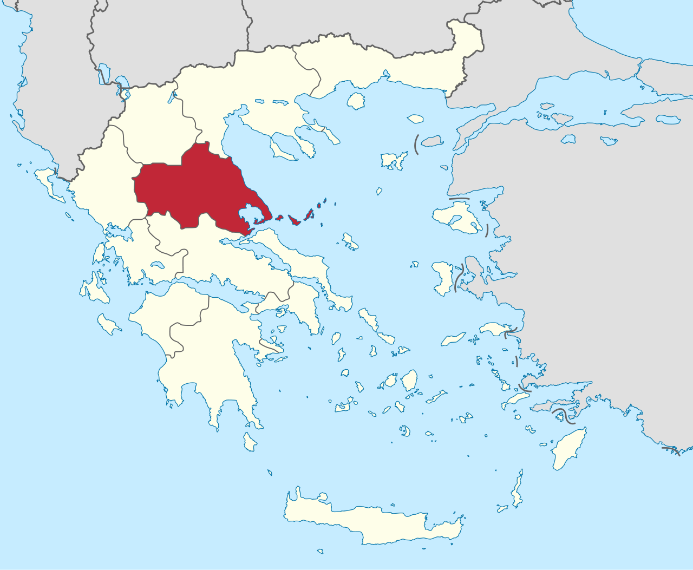

Tessália
A Tessália é uma região no nordeste da Grécia, conhecida por sua beleza natural. A culinária da Tessália é influenciada por sua localização montanhosa e costeira, oferecendo pratos tradicionais que combinam ingredientes locais como queijo de cabra, legumes frescos e frutos do mar.